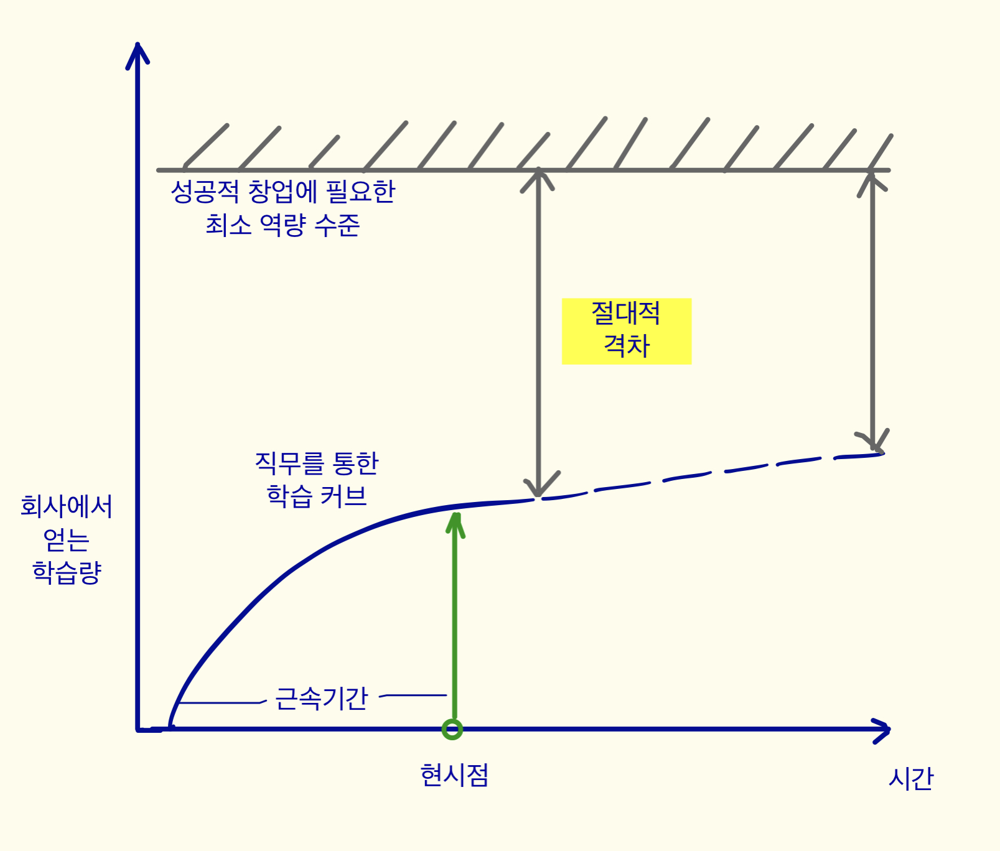

4. 잠재 사업가가 마주할 수 있는 변화들
더더더 배워야한다는 생각들
- 자기 사업을 시작하고 싶지만, 계속해서 더 배워야 한다고 생각하는 경우가 많다.- 정해진 직무 내에서 일정 수준 배우고 나면, 더이상 성장 속도가 나지않는 현상이 나타난다.
- 그 이유는 직무를 쉽게 바꿀 수 없기 때문이다. 또 다른 직무를 간접적으로 공부한다고 해도 실제 전담해서 하는 것과는 차이가 난다.
- 결과적으로 창업에 필요한 모든 역량을 회사에서 다 배운다는 것은 불가능하다.
- 언젠가는 반드시 밖으로 나가서 그 절대적 격차를 경험으로 줄여가야 한다.
- 관건은 얼마나 신속하게 실행해서 그 경험의 격차를 자기 손으로 빨리 채워나가는가다.

시간은 언제까지나 우리를 기다려줄까?
- 직무를 통해 배운 스킬과 노하우는 영원히 유효할까?- 아마도 아닐 것이다. 아주 짧은 시간동안 유효할 것이다.
- 그 이유는 시장과 경쟁자들이 빠르게 따라왔기 때문이다.
- 내가 배운 노하우를 내 사업에 쓰겠다고 마음 먹었더라도 시간이 지나면 그 효과가 점점 줄어들 수 있다.
- 그 구체적인 이유는 5.창업에서 설명